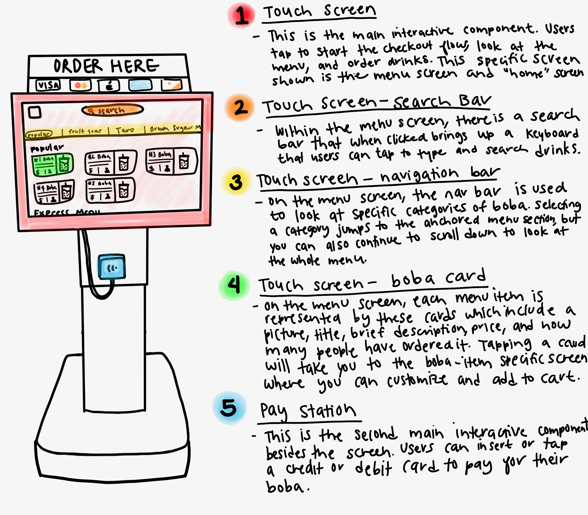
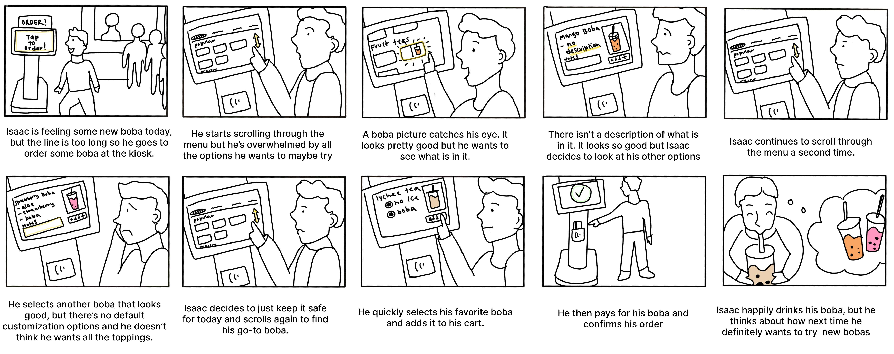

Boba Kiosk Contextual Inquiry
A investigation into user interactions with self checkout systems

In this project, I investigated the users using boba kiosks where people can self-order their boba without going to the counter. I observed different users to determine what types of people are using the kiosks and understand their overall experience using the kiosks.
I also conducted user interviews to better understand these users and the context under which they are acting. Using an empathy map, I then created user personas I used to inform a storyboard of the user experience.
The boba kiosk presents an option for users to order their boba without going to the counter. In theory, they can decrease the wait time if the store is busy, lower the burden on workers, allow users to make sure their order is more accurate, as well as provide a way for less social customers to avoid social interaction.
The boba kiosk is a variation on a self checkout station, and is similar to ordering anything online on your own devices. Unlike your own device however, its touch screen and actions are limited to showing the menu and facilitating orders.
This list consists of the most common and important user behaviors that I observed.
I followed up my observations with user interviews with three different customers. Users consisted of both first time and return users. Overall, users appreciated the interface for its convenience and visual appeal, but had some frustrations regarding customization and the consistency of how menu items were listed. Below are some featured questions and answers.
How often do you use this interface?
“This is my first time”
“I’ve only used it a few times”
“Not every time I go to the shop… probably 5 or 6 times?”
Do you know what you are going to order before entering the shop?
“No”
“If I have been there before then I know what I want”
“I have certain bobas I usually know I am going to pick between, but sometimes I want to try something different so I don’t know.”
How do you decide what to order with this interface?
“I first looked at the big categories, then picked a specific category to pick from”
“I just scroll and first look at what is visually appealing then what sounds good based off the description”
“I usually already know what I want so I just look for it”
How often do you change your order at the interface and how often do you change your order at the counter?
“I don’t really change my mind at either”
“I feel like I think more about what I want to order at the kiosk so 2-3 times, but not at the counter”
“Once or twice at the kiosk, and I feel like I settle on my choice quicker at the counter since I feel more pressure to not waste the cashier’s time.”
How would you describe your experience with this interface?
“It was easy and convenient, but I felt that there weren’t many special options to customize my order on the kiosk”
“Convenient but not informative. I was confused by the lack of descriptions that I could have asked about if I was at the counter, and I didn’t like that you couldn’t customize them as much.”
“It is as fast and convenient as I like, but I feel like the customization options aren’t consistent. It is just kind of weird.”
From my interviews and observations, I discovered there were two main user types using boba kiosks.
Callie the “Customizer” is a pre-med college student who has her preferences and wants to make sure everything she buys is exactly to her taste. She’s picky and doesn’t want to spend money on anything she might not like.
“Indecisive” Issaac is a college student who wants to try to order new things he thinks he would like. However, he is easily overwhelmed by choice and has a hard time making decisions.
Using the “Indecisive Isaac” persona, I then developed an storyboard of his complete user experience using the kiosks.
In conclusion, I found that despite users finding the boba self checkout kiosk to be convenient and quick, users were not too likely to choose to use it unless lines were really long. I also found that most users customize their orders, and were frustrated by the kiosk because of this. Finally, I found that while users have set preferences that they adhere to, many users like to try different drinks.